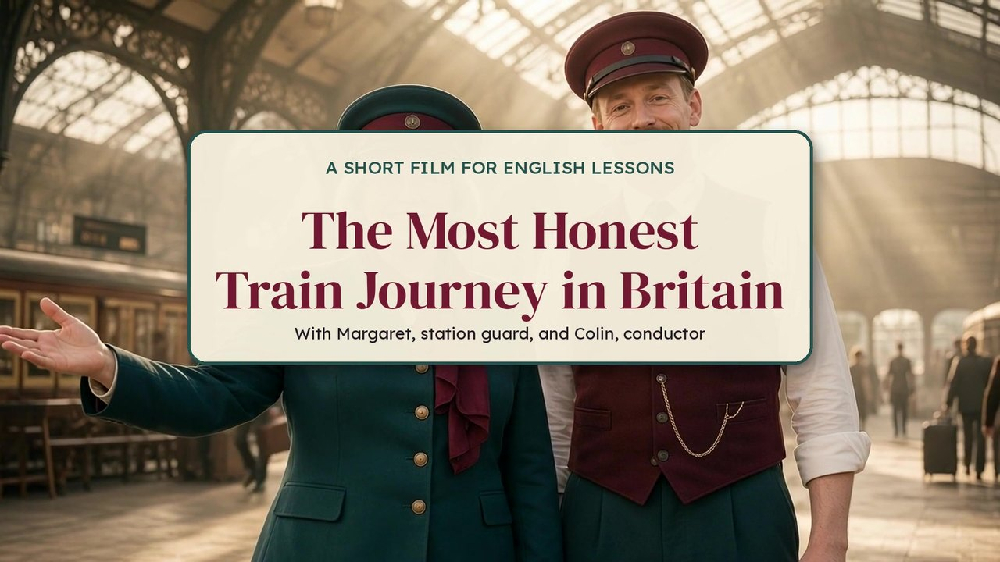

The Most Honest Train Journey in Britain
Extra sessionB1 · adapted2 hours
Problem. Why do British people laugh about their trains?
London has buses and the Tube. To leave London, you take the train. Margaret, a station guard, and Colin, a conductor, tell you the whole truth about a train journey in Britain, with a lot of polite irony.
You will learn to:
- buy the right ticket at a ticket office or a ticket machine
- understand the departure board and announcements
- make polite requests: Could you..., Would you mind + -ing
- spot British irony and understatement
Links with what you know. In London Buses and the Tube sequence you paid for your journeys. In Mind the gap: British humour underground you studied British humour. This session takes you out of London, by train.

Step 1
Recap check
Three questions, marked. What do you remember about London transport?
1. On a London bus, how do you pay?
2. What does « Mind the gap » mean?
3. When did the first underground railway open in London?
Answer key
- With a contactless card or an Oyster card
- Be careful of the space between the train and the platform
- 1863
Step 2


To buy the right ticket, ask for help at the station and laugh at a bad journey the British way, we need polite requests (Could I ..., Would you mind + -ing), indirect questions (Could you tell me where ... is?) and the tools of British humour: irony and understatement.
Before watching
1. Look and predict
Look at the picture of Margaret and Colin. Where are they? What is their job? What problems can you have when you take a train?
- I think they work at...
- Maybe the train is...
- You can miss...
Possible answers
They are in a big old railway station. Margaret is a station guard and Colin is a conductor. Possible problems: the train is late, the ticket is expensive, the platform changes, there are no seats, you miss your connection.
2. Train words: match
Tap a word on the left, then its meaning on the right.
Answer key
- a single: a ticket to go there only
- a return: a ticket to go there and come back
- off-peak: cheaper, for quieter times, not in the rush hour
- an advance ticket: a cheap ticket you buy early, only for one train
- the departure board: the big screen with the trains, times and platforms
- delayed: late, not on time
Step 3
While watching
1. Watch the film
The film stops for a question from time to time. Answer, then tap Continue the video. You can switch the questions off to watch it straight through.
Question 1 of 4
How much is the off-peak return?
Question 2 of 4
What does the departure board say?
Question 3 of 4
What can Ellie say to the gentleman in her seat?
Question 4 of 4
How do the passengers finish their journey?
Answer key: video questions
- How much is the off-peak return?: £87.50
- What does the departure board say?: Delayed
- What can Ellie say to the gentleman in her seat?: Excuse me, would you mind moving?
- How do the passengers finish their journey?: By rail replacement bus
2. True or false?
1. Margaret is the conductor.
2. The train leaves on time.
3. Someone is sitting in the reserved seat.
4. The driver explains why the train stops.
Answer key
- False. Margaret is the station guard. Colin is the conductor.
- False. The departure board says « Delayed ».
- True. Ellie has a reservation, but a gentleman is sitting in her seat.
- False. There is no announcement. Nobody knows why.
3. Fill in the script
Watch again and complete the script. Use the word bank.
Word bank (tap a word to fill the box you are in):
Margaret: First, choose your ticket. Anytime, , super off-peak or advance? Single or ?
Margaret: Now, the departure board. Your train is... . Of course it is.
Colin: Someone is sitting in your seat. You can politely ask: Excuse me, would you mind ?
Margaret: Unfortunately, you have missed your .
Answer key
- off-peak
- return
- delayed
- reserved
- moving
- connection
Step 4


Words in action
EntryComplete with: return, delayed, connection, aisle.
- Margaret: Your train is ... ______. Of course it is.
- Single or ______? Take your time.
- Or you can stand in the ______. Very British.
- Unfortunately, you have missed your ______.
Show the answers
1. delayed. 2. return. 3. aisle. 4. connection.
After watching
1. Why is it funny?
- Colin says « Lovely » after a price of eighty-seven pounds fifty. Does he really think it is lovely?
- Margaret says « Of course it is » when the train is delayed. What does it tell you?
- Colin says « Very British » about standing in the aisle. Why?
- He doesn't really mean it: it's irony.
- She is not surprised because...
- It is typical of British people to...
Possible answers
- No. It is irony: he says the opposite of what he thinks. The ticket is very expensive.
- She is not surprised at all: trains are often late. It is resigned humour, and a kind of understatement.
- British people are known for being polite: they prefer to stand for two hours rather than make a fuss. Colin laughs at this habit.
Figures of speech in the documents
“An off-peak return for a one-hour journey: eighty-seven pounds fifty. Lovely.” “Your train is... delayed. Of course it is.” “From A to B, via C and D.”
Lovely for a very high price: Colin says the opposite of what he thinks. This is irony.
EntryMatch each quotation with irony, understatement or hyperbole.
Show the answers
Lovely: irony. Of course it is: understatement. From A to B, via C and D: hyperbole.
2. Role play at the ticket office
Work in pairs. Student A is the passenger, Student B works for the railway. Then swap. Language: use Could I ... for what you want, Would you mind + -ing for what the other person should do, and Could you tell me where ... is? for information.
Scene 1. Buying an off-peak return
You want to go to Brighton and come back today. You leave after 10 in the morning. Ask for the cheapest ticket, the price and the platform.
You sell tickets. An off-peak return costs £24.80 (imaginary price). The train leaves at 10.42 from platform 6. It is a direct train: no change.
Scene 3. Someone is in your reserved seat
You have a seat reservation: coach C, seat 42. Someone is sitting in it. Ask them politely to move.
You are sitting in seat 42. You did not know it was reserved. First you are surprised, then you agree to move, politely.
Useful phrases
- Could I have an off-peak return to..., please?
- How much is it? Is it direct or do I need to change?
- Which platform does it leave from?
- Excuse me, could you tell me if the train to... still leaves from platform four?
- Excuse me, I'm sorry, but I think you're in my seat. Would you mind moving?
- Oh, I'm so sorry. Not at all. / No problem.
Model dialogues
Scene 1. A: Good morning. Could I have a return to Brighton, please? B: Are you coming back today? A: Yes, this evening. B: Then an off-peak return is the cheapest. That's twenty-four pounds eighty. A: Here you are. Which platform does it leave from? B: Platform six, at 10.42. It's direct. A: Thank you very much.
Scene 2. A: Excuse me, could you tell me if the train to Bath still leaves from platform four? B: I'm afraid there's a change of platform. It now leaves from platform nine. A: Is it on time? B: No, it's delayed by ten minutes. A: Thank you. Would you mind telling me where platform nine is? B: Not at all, it's just over there.
Scene 3. A: Excuse me, I'm sorry, but I think you're in my seat. I've got a reservation for seat 42. B: Oh, really? I'm so sorry, I didn't know. A: That's all right. Would you mind moving? B: Not at all. Here you are.
Step 5
Grammar lesson: polite requests and indirect questions
Rule
Could I have ...? Could you tell me ...? Would you mind moving? Could you tell me where platform nine is?
Form
- Could I + base verb: Could I have a return ticket, please?
- Could you + base verb: Could you tell me the platform, please?
- Would you mind + -ing: Would you mind opening the window?
- indirect question: Could you tell me where platform nine is? / Could you tell me if the train is on time?
- bad news: I'm afraid the train is delayed.
Examples from the lesson
- “Could I have a return ticket, please?”
- “Would you mind moving?” “Not at all.”
- “Could you tell me if the train to Bath still leaves from platform four?”
Common mistakes
- Not
Would you mind to open the window?, but Would you mind opening the window? - Not
Could you tell me where is platform nine?, but Could you tell me where platform nine is?
Quick check (2 minutes, hands up or mini whiteboards)Polite or not? Correct if necessary.
- Give me a single to Oxford.
- Would you mind closing the door?
- Could you tell me where is the exit?
Show the answers
1. Could I have a single to Oxford, please? 2. Correct. 3. Could you tell me where the exit is?
Exercises
EntryRecognise. Underline the polite request and circle the verb form after it.
- Would you mind moving your bag, please?
- Could I have a return ticket, please?
- Could you tell me the time of the next train?
Show the answers
1. Would you mind + moving (-ing). 2. Could I + have (base verb). 3. Could you + tell (base verb).
CoreTransform. Make each direct question indirect, starting with Could you tell me.
- Where is the ticket office?
- When does the next train leave?
- Is this seat taken?
Show the answers
1. Could you tell me where the ticket office is? 2. Could you tell me when the next train leaves? 3. Could you tell me if this seat is taken?
StretchProduce. Write a six-line dialogue at the station with one Could I, one Would you mind, one indirect question and one I'm afraid.
Show the answers
For example: A: Excuse me, could I have a return to Bath, please? B: Of course. That's forty pounds. A: Could you tell me which platform it leaves from? B: I'm afraid there's a change: platform nine. A: Would you mind showing me on the board? B: Not at all.
Grammar: polite requests
Could you + base verb: Could you tell me the platform, please?
Could I + base verb: Could I have a return ticket, please?
Would you mind + verb in -ing: Would you mind moving? Would you mind opening the window?
Careful. The answer « Not at all » or « No, of course not » means « I don't mind, I'll do it ».
More polite. Start with « Excuse me » or « Sorry », and finish with « please ». « I'm afraid... » introduces bad news politely: I'm afraid the train is delayed.
Practice
1. Would you mind ___ your bag, please?
2. Could you ___ me which platform it is?
3. Would you mind ___ the window?
4. ___ you help me with my suitcase, please?
Answer key
- moving
- tell
- opening
- Could
Make it polite
Rewrite each request. Use Could you, Could I or Would you mind.
- Move your bag.
- Tell me the time of the next train.
- Give me a single to Oxford.
Possible answers
- Would you mind moving your bag, please?
- Could you tell me the time of the next train, please?
- Could I have a single to Oxford, please?
Other polite forms are accepted, for example « Excuse me, could you... ».
Step 6
Expression task
Oral, in pairs: at the station. Use the role play cards, then add one funny line in the style of Margaret and Colin.
EntryScene 1: three polite requests (ticket, price, platform).
Tools to use:
- Could I ..., Could you ..., Would you mind + -ing
- Could you tell me where ... is? / if ...
- off-peak, return, delayed, platform, connection
Sentence starters:
- Excuse me, could I have ...
- Could you tell me where ...
- Would you mind ...
- I'm afraid ...
Show a model answer
A: Excuse me, could you tell me if the train to Bath still leaves from platform four? B: I'm afraid there's a change of platform: platform nine, and it's delayed by ten minutes. A: Would you mind telling me where platform nine is? B: Not at all, just over there. A: Lovely. Ten minutes late and a new platform: my favourite kind of morning.
Vocabulary of the session
| Word or phrase | Meaning |
|---|---|
| a station guard | a person who works at the station and helps passengers |
| a conductor | the person who checks tickets on the train |
| a ticket machine | a machine where you buy your ticket yourself |
| an anytime ticket | you can travel at any time, usually the most expensive |
| an off-peak ticket | a cheaper ticket for quieter times |
| a super off-peak ticket | an even cheaper ticket for the quietest times |
| an advance ticket | a cheap ticket you buy early, only for one train |
| a single | a ticket to go there only |
| a return | a ticket to go there and come back |
| a fare | the price of a journey |
| the departure board | the screen with the trains, times and platforms |
| delayed | late, not on time |
| a change of platform | your train leaves from a different platform |
| a reserved seat | a seat that is kept for you |
| the aisle | the space between the seats where people walk |
| an announcement | information given to passengers through a speaker |
| to miss a connection | to arrive too late for your next train |
| a rail replacement bus service | a bus that replaces the train when the line is closed |
Homework
Task 1. Vocabulary
Write the right word.
- A ticket to go there and come back: a ...
- The space between the seats on a train: the ...
- Late, not on time: ...
Answer key
- a return
- the aisle
- delayed
Task 2. Polite requests
Complete with the verb in the correct form.
- Would you mind (help) ... me with my suitcase?
- Could you (show) ... me the way to platform nine?
- Would you mind (wait) ... a minute?
Answer key
- helping
- show
- waiting
Task 3. Writing: a complaint
Your train was delayed and you missed your connection. Write a short email to the railway company (60 words). Say what happened and ask politely for a refund.
Answer key
Dear Sir or Madam,
I am writing about my journey on 3 November. I had an off-peak return ticket. First, my train was delayed by forty minutes. Then the platform changed at the last minute and I had to run. Because of the delay, I missed my connection and I had to take a rail replacement bus, which took two more hours. I was very tired and late for an important appointment. Could you please refund my ticket?
Yours faithfully,
Sam Martin
Step 7
Homework bank
Extra tasks to choose from. « At home » tasks are for practice. « In class · one-off assessment » tasks are marked.
Bank 1. My mini dictionary
Make a mini dictionary of ten train words from the session. For each word, write the meaning in English and an example sentence. Add a small drawing if you like.
Answer key
Example: a connection: the next train you need to catch. « I missed my connection in Bristol because my first train was late. » Check that each sentence uses the word correctly.
Bank 2. The next scene
Write the next scene of the film: Ellie is on the rail replacement bus. Write eight lines of dialogue between Ellie and Colin. Use one polite request and one ironic sentence.
Answer key
Example: Colin: Welcome to the rail replacement bus. Ellie: Could you tell me when we arrive in B? Colin: In about two hours. We stop in C and D first. Ellie: Lovely. Would you mind opening the window? Colin: Not at all. Ellie: Is there a toilet on the bus? Colin: I'm afraid not. Ellie: Of course not.
Assessment A. A station announcement
Duration: 25 minutes. Marked out of 20. The teacher reads the announcement aloud twice, then students read it.
- How late is the train to Seaside? (2 points)
- Which platform does it leave from now? (2 points)
- Where must passengers for Hilltown change? (2 points)
- Which part of the train is reserved, and for whom? (2 points)
- What happens at the weekend? (4 points)
Questions 1 to 4 are worth 2 points each, question 5 is worth 4 points. The last 8 points: write the five train words you hear in the announcement (4 points) and one polite request (4 points).
Answer key and mark scheme
- About twenty-five minutes.
- Platform two.
- At Riverford.
- The last two coaches, for a school group.
- A rail replacement bus service runs between Riverford and Seaside on Saturday and Sunday, because of engineering works.
Train words in the announcement: delayed, platform, change, coaches, reserved, rail replacement bus service. Accept any five. Polite request: for example « Could you tell me where platform two is, please? »
| Mark scheme | Points | What we look for |
|---|---|---|
| Understanding facts | 12 | Times, platforms, stations and the reserved coaches are correct. |
| Understanding details | 4 | The weekend bus and the reason. The expression used to apologise. |
| Polite requests | 4 | Could you + base verb, Would you mind + -ing, please, excuse me. |
Assessment B. Role play at the ticket office
Duration: 10 minutes to prepare, then 3 minutes per pair. Marked out of 20.
The teacher gives each pair one of the three scenes from the role play. No notes during the role play, only five key words on a card.
| Grid | 1 point | 2 to 3 points | 4 to 5 points |
|---|---|---|---|
| Task done | The situation is not clear | The main information is given | Ticket, price, platform or seat: everything is clear |
| Train vocabulary | One or two words | Some words, used correctly | Varied and precise: off-peak, return, platform, reservation |
| Polite requests | Orders, no please | One correct polite request | Could you and Would you mind used correctly, natural politeness |
| Interaction and pronunciation | Long silences, hard to understand | Some hesitation, mostly clear | Natural exchange, clear pronunciation |
What is expected
A pair gets 4 to 5 points per line when the dialogue is close to the model dialogues above: a clear request, the price or platform given, a polite request with the correct verb form, and a polite answer such as « Not at all ».
Step 8